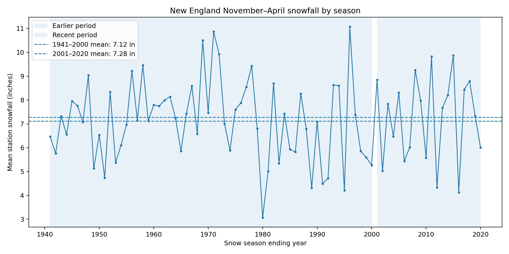
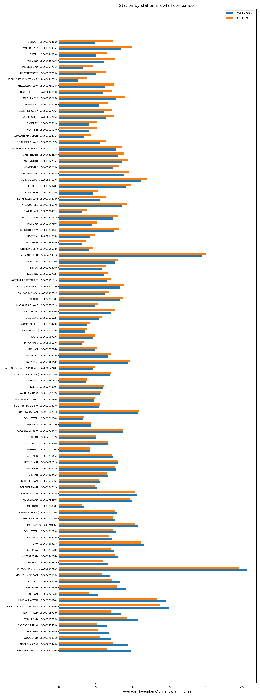

This report compares November–April snowfall in Connecticut, Maine, Massachusetts, New Hampshire, Rhode Island, and Vermont. Snow seasons are labelled by the year in which April occurs.
Annual snowfall variation
The annual series fluctuates substantially. Its highest reported annual average was 11.07 inches in 1996; its lowest was 3.07 inches in 1980. The number of stations contributing varies by year.

Station-by-station findings
Of 98 eligible stations, 63 increased, 34 decreased, and one showed no change in average seasonal snowfall. That is approximately 64.3% of stations with an increase. The regional average therefore does not mean every location experienced the same pattern.
Largest increases
| Station | 1941–2000 | 2001–2020 | Change |
|---|---|---|---|
| Belfast | 4.86 in | 7.36 in | +2.51 in |
| Van Buren 2 | 8.45 in | 9.94 in | +1.49 in |
| Lowell | 5.09 in | 6.56 in | +1.47 in |
| Rutland | 6.20 in | 7.58 in | +1.38 in |
| Middleboro | 3.30 in | 4.64 in | +1.34 in |
Largest decreases
| Station | 1941–2000 | 2001–2020 | Change |
|---|---|---|---|
| Enosburg Falls | 9.82 in | 6.62 in | −3.20 in |
| Norfolk 2 SW | 9.38 in | 7.42 in | −1.96 in |
| Woodland | 7.09 in | 5.61 in | −1.49 in |
| Hanover | 6.88 in | 5.39 in | −1.49 in |
| Sanford 2 NNW | 6.58 in | 5.13 in | −1.45 in |

Download all 98 station comparisons (CSV) · Download annual averages (CSV) · Read the detailed results and limitations.
Method
- Source: NOAA NCEI Global Historical Climatology Network-Daily (GHCN-Daily), daily
SNOWelement. - Season: November through April, labelled by the year containing April.
- Coverage: At least 80% of November–April days observed per station-season; stations need at least 30 valid seasons in the earlier period and 10 in the recent period.
- Observations: 4,608 station-seasons in 1941–2000 and 1,715 in 2001–2020.
- Weighting: The period means use an equal-weight average of the 98 eligible station means. This is not an area-weighted estimate.
Reproducibility: Run python scripts/analyze.py from the repository root to download the NOAA station files and regenerate the report outputs. Raw downloads are excluded from Git.